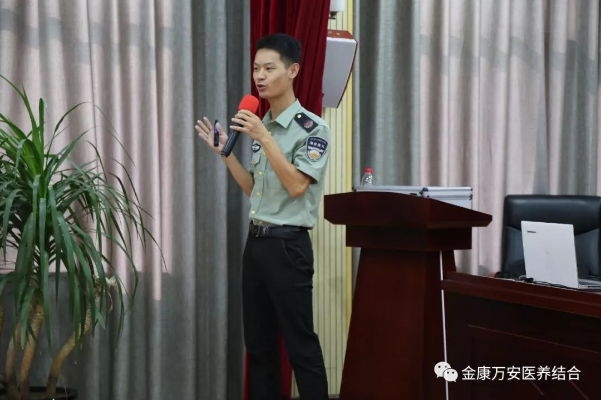
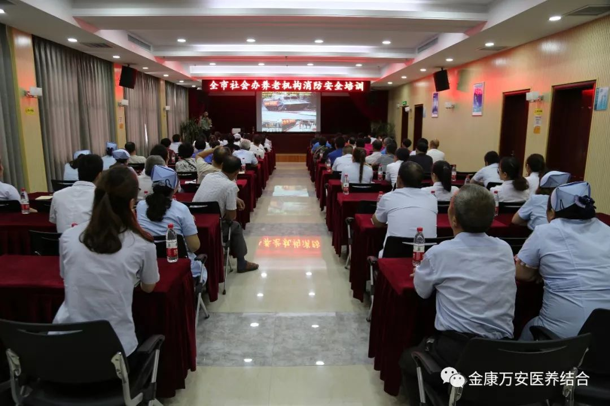

为了进一步提升全市养老机构消防安全工作，提高员工灭火、疏散、自救的能力，增强消防安全意识。2018年7月24日上午，由漯河市民政局主办的以“珍爱生命，远离火灾”为主题的全市社会办养老机构消防安全培训在漯河万安医院举行。此次培训特地邀请了河南省安居消防培训中心刘教官进行授课。
市民政局老龄办主任葛继锋、院长王卫峰、业务院长银令令、后勤院长杨延顺、业务院长刘洋以及社会办养老机构代表及我院员工共90余人参加了此次培训。
本次培训分为火灾案例警示、消防法知识普及、和消防应急救援常识三个部分。培训中，刘教官对单位火灾、家庭火灾等一一讲解，使学员们更加深刻地理解了消防工作的重要地位和自身的责任担当。
此次培训得到了领导和学员们的一致好评！通过此次消防安全培训, 使大家知道了怎样合理利用身边的消防器材进行初期火灾的扑救，掌握了一些基本的火灾现场逃生知识，提高了自防自救能力，同时进一步推进了全市养老机构消防工作的顺利开展，也为构筑社会安全建设打下了坚实的基础。